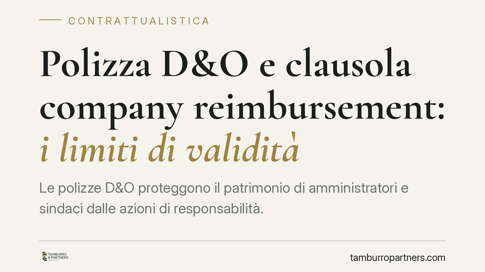
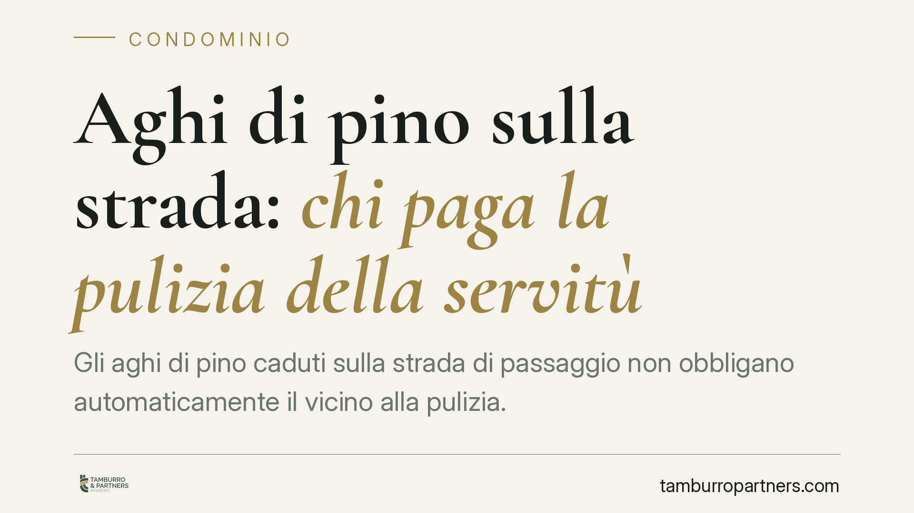
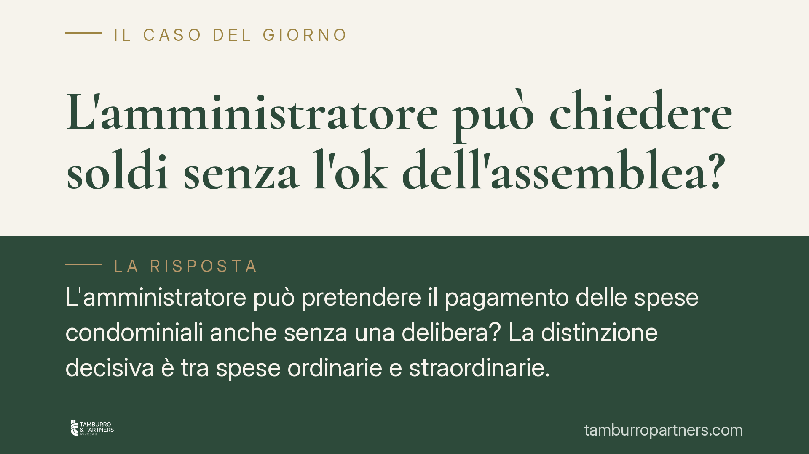
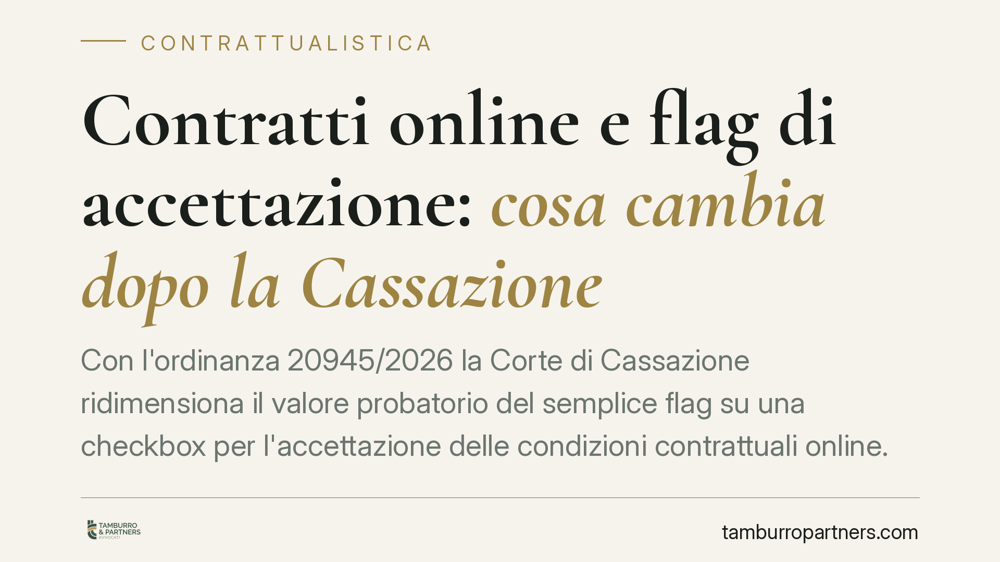
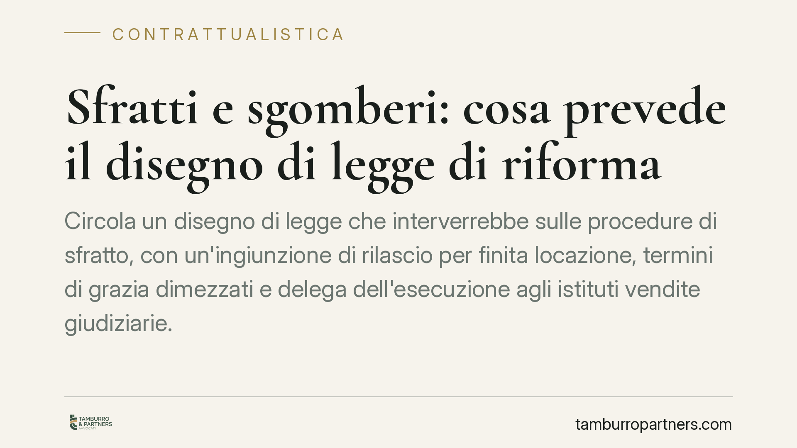
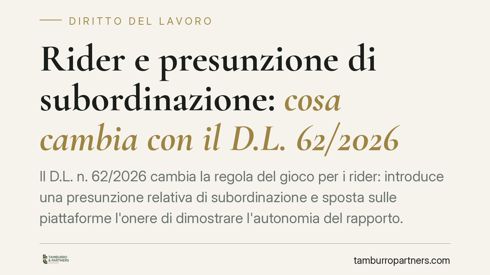

Opzione donna esclusa per chi ha già diritto alla pensione anticipata
La Corte di Cassazione torna sull'Opzione donna e fissa un punto netto: il regime non spetta a chi possiede già i requisiti per la pensione anticipata ordinaria. Una lettura che re…

Precari della scuola e abuso del contratto a termine: il diritto al risarcimento oltre i 36 mesi
L'uso reiterato di contratti a termine nella scuola pubblica oltre i 36 mesi configura un abuso secondo il diritto dell'Unione e la giurisprudenza italiana. Docenti e personale ATA…

TFR e fondi pensione: l'adesione automatica per i neoassunti
Lo schema della Legge di Bilancio 2026 prevede un meccanismo di adesione automatica dei neoassunti del settore privato ai fondi pensione, con conferimento tacito del TFR salvo rifi…

Quattordicesima INPS 2026: chi la riceve e come si calcola
Con il messaggio n. 2052 del 19 giugno 2026 l'INPS ha confermato modalità e requisiti per l'erogazione della quattordicesima ai pensionati. È una somma aggiuntiva legata a età e re…

Retribuzione durante le ferie: deve corrispondere allo stipendio ordinario
La retribuzione spettante durante le ferie deve corrispondere a quella percepita nei periodi di lavoro effettivo. Lo ribadisce il Tribunale di Salerno con la sentenza n. 2142 del 2…

Caldo estremo 2026: la cassa integrazione torna per le aziende esposte al rischio termico
Anche per il 2026 il Governo conferma le misure straordinarie contro l'impatto del caldo estremo sul lavoro. Al centro c'è l'accesso agevolato alla cassa integrazione quando le tem…

Demansionamento e trasferimento: quando non sono mobbing
Subire un demansionamento o un trasferimento non equivale automaticamente a mobbing. Secondo l'orientamento consolidato della Cassazione, serve una condotta plurima, sistematica e …

Riforma del Terzo settore: il regime fiscale tra attività di interesse generale e attività diverse
Il quadro fiscale degli enti del Terzo settore resta uno dei profili più delicati della riforma avviata con il d.lgs. 117/2017. Iniziative di formazione promosse dall'Amministrazio…

Eredi del passeggero deceduto e azione diretta contro l'assicurazione: i limiti dell'art. 141
Il Tribunale di Bari ha stabilito che gli eredi di un passeggero deceduto in un sinistro stradale non possono avvalersi della procedura semplificata di risarcimento diretto verso l…

Licenziamento e intelligenza artificiale: cosa ha stabilito il Tribunale di Roma
Il Tribunale di Roma ha riconosciuto come legittimo il licenziamento di una grafica sostituita da strumenti di intelligenza artificiale, ma solo entro confini precisi. La decisione…

Durata dell'incarico dell'amministratore di condominio: cosa cambia dopo due anni
La Cassazione torna sulla durata dell'incarico dell'amministratore di condominio: scaduto il termine di due anni, il mandato cessa automaticamente, senza bisogno di un provvediment…

Delibere condominiali e arbitrato: quando la clausola compromissoria esclude il giudice
La Cassazione ribadisce che le liti su delibere condominiali possono essere devolute a un arbitro, se il regolamento contiene una clausola compromissoria valida. In tal caso il ric…

Part-time: il datore può cambiare l'orario senza il tuo consenso?
Nel lavoro a tempo parziale la collocazione e la durata dell'orario sono elementi essenziali del contratto. Il datore non può spostarli a piacimento: serve un accordo scritto o una…

Polizza D&O e clausola company reimbursement: i limiti di validità
Le polizze D&O proteggono il patrimonio di amministratori e sindaci dalle azioni di responsabilità. Una clausola tipica obbliga l'assicuratore a rimborsare la società per quanto qu…

Aghi di pino sulla strada: chi paga la pulizia della servitù
Gli aghi di pino caduti sulla strada di passaggio non obbligano automaticamente il vicino alla pulizia. La Cassazione ha precisato che il fenomeno naturale non genera responsabilit…
Chiedere la busta paga al colloquio: cosa cambia con la trasparenza retributiva UE
Chiedere a un candidato la busta paga per conoscere lo stipendio precedente è una prassi diffusa nei colloqui di selezione. La Direttiva (UE) 2023/970 sulla trasparenza retributiva…

L'amministratore può chiedere soldi senza l'ok dell'assemblea?
L'amministratore può pretendere il pagamento delle spese condominiali anche senza una delibera? La distinzione decisiva è tra spese ordinarie e straordinarie. Per le prime il versa…
Clausole vessatorie nei contratti online: il click basta?
Nei contratti conclusi online il consenso si esprime spesso con un click su una casella. Ma per le clausole vessatorie, che impongono oneri o limiti al contraente debole, questo pu…

Contratti online e flag di accettazione: cosa cambia dopo la Cassazione
Con l'ordinanza 20945/2026 la Corte di Cassazione ridimensiona il valore probatorio del semplice flag su una checkbox per l'accettazione delle condizioni contrattuali online. La pr…

Sfratti e sgomberi: cosa prevede il disegno di legge di riforma
Circola un disegno di legge che interverrebbe sulle procedure di sfratto, con un'ingiunzione di rilascio per finita locazione, termini di grazia dimezzati e delega dell'esecuzione …

Rider e presunzione di subordinazione: cosa cambia con il D.L. 62/2026
Il D.L. n. 62/2026 cambia la regola del gioco per i rider: introduce una presunzione relativa di subordinazione e sposta sulle piattaforme l'onere di dimostrare l'autonomia del rap…

Ferie non godute e contributi INPS: termini, imponibile e sanzioni
Le ferie maturate e non fruite dai dipendenti pongono un problema spesso trascurato: il versamento dei contributi INPS sul relativo controvalore. Il nodo riguarda quando l'imponibi…

Pezzi di balcone sull'auto: chi risponde dei danni in condominio
Un calcinaccio o un frammento di balcone che precipita su un'auto parcheggiata apre una domanda ricorrente: chi paga? La risposta non è univoca. Dipende dalla natura dell'elemento …

TFR e silenzio-assenso: cosa sapere sulla destinazione del trattamento di fine rapporto
Circola la notizia di una riforma del TFR in vigore dal 1° luglio 2026, con un nuovo termine di 60 giorni e meccanismi di silenzio-assenso ridefiniti. Allo stato non risulta una fo…

Recesso dalle trattative: quando cambiare idea costa caro
Nessuno è obbligato a concludere un contratto: fino alla firma le parti restano libere. Ma questa libertà non è assoluta. Chi abbandona una trattativa avanzata, senza ragione e dop…

Apertura di credito ipotecaria: la banca può trasferirvi i vecchi debiti?
Un cliente con un conto in rosso accetta una nuova apertura di credito garantita da ipoteca. Ma quel debito pregresso può essere semplicemente "travasato" sulla nuova linea? La giu…

Rifiuti conferiti male: il condominio non paga senza prova dell'autore
Una sanzione amministrativa per errato conferimento dei rifiuti non può ricadere sul condominio solo perché i rifiuti provengono dallo stabile. Lo ribadisce il Tribunale di Siracus…

Proposta irrevocabile: quando vincola davvero e per quanto tempo
Nella compravendita immobiliare la proposta irrevocabile è il primo atto che lega l'acquirente. Ma quando vincola realmente e per quanto tempo? Il termine di scadenza, la caparra e…

Clausole vessatorie nelle polizze: la specifica approvazione scritta
Le clausole che limitano la copertura assicurativa non bastano a vincolare l'assicurato per il solo fatto di essere inserite nel contratto. Il Codice civile richiede una specifica …

Reinserimento socio-lavorativo dei detenuti: il Protocollo di Rete di Catania
Il Forum del Terzo Settore di Catania ha sottoscritto un Protocollo di Rete per il reinserimento socio-lavorativo delle persone detenute, insieme ad Amministrazione Penitenziaria, …